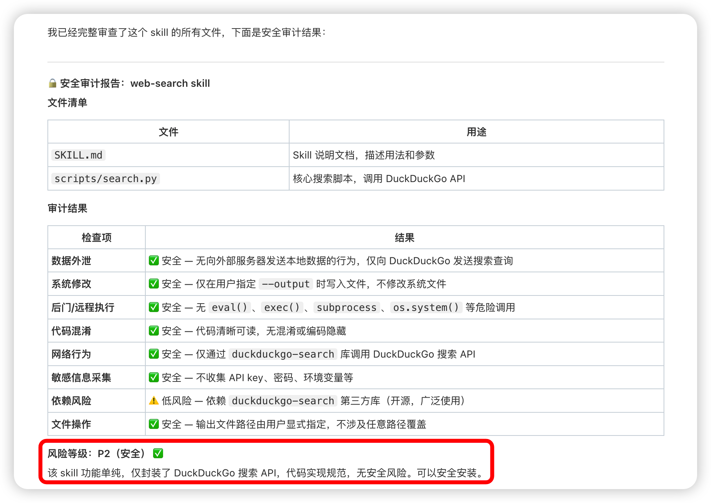
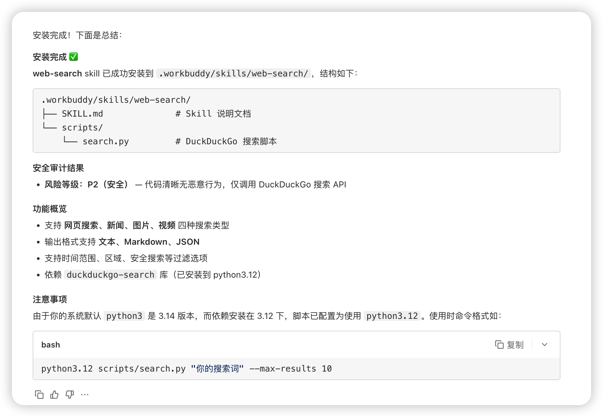

Skill Scanner
一、基本信息
- 安装名：
skill-scanner - 仓库来源：
SkillHub
二、功能简介
第三方 Skill 本质上是可执行代码。Skill Scanner 的核心价值在于，在安装前先对 Skill 做安全审查，帮助用户发现可疑依赖、硬编码配置和潜在风险，降低误装风险。
三、适用场景
- 安装新
Skill前先做一次审查 - 检查是否存在可疑依赖
- 排查是否有硬编码私人配置
- 为新手提供基础安全兜底
四、推荐使用方式
用于安装技能、包或插件的安全检查。请在执行任何 npm install、openclaw plugins install、clawhub install 或类似安装命令之前使用。
示例效果：
以下示意展示了在安装 web-search 时生成的审计结果。


五、使用建议
- 先审计，再安装：这是最推荐的使用顺序。
- 重点关注依赖和脚本：尤其是来源不明的第三方
Skill。 - 适合新手长期启用：可作为日常安装流程的一部分。